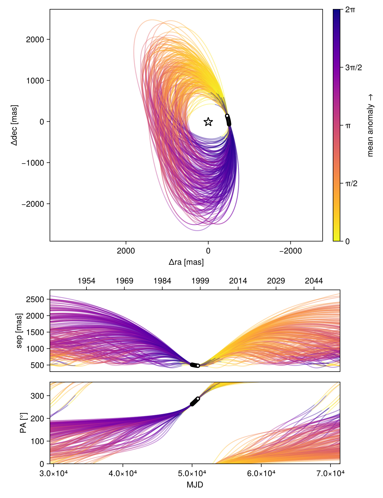
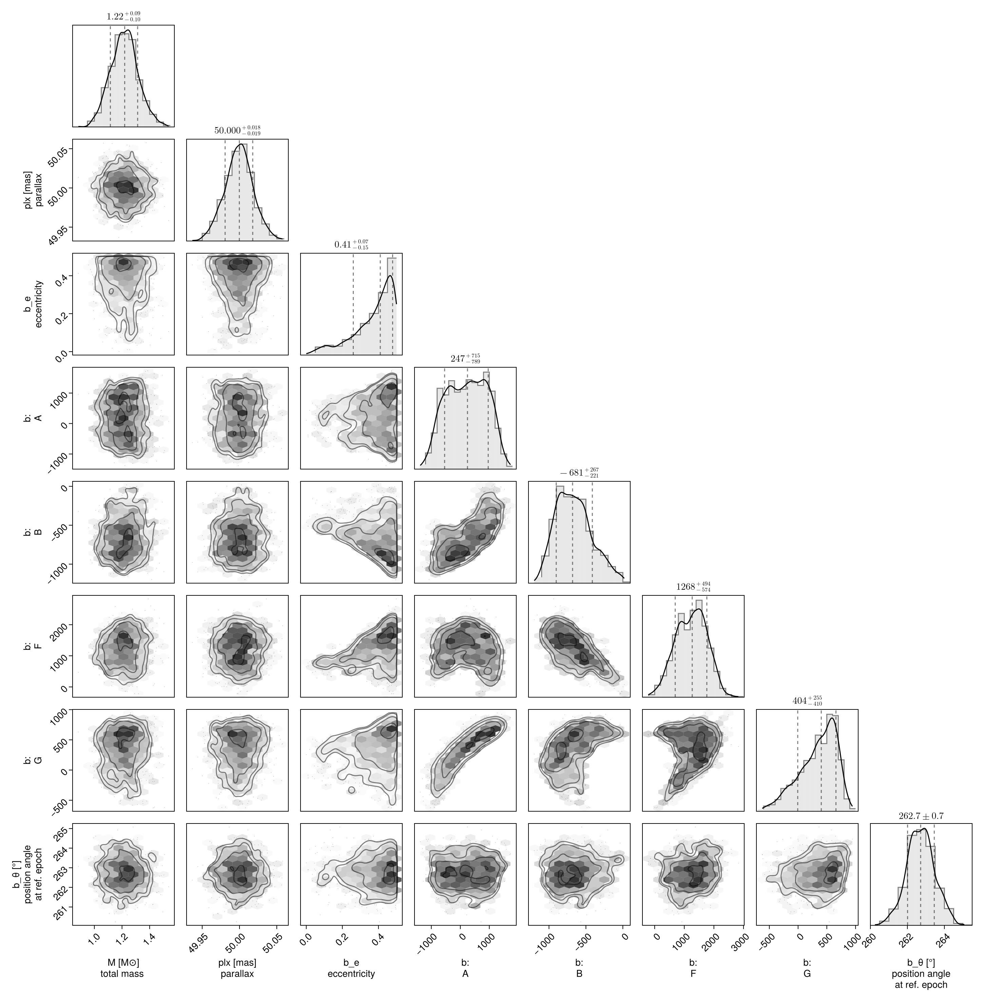
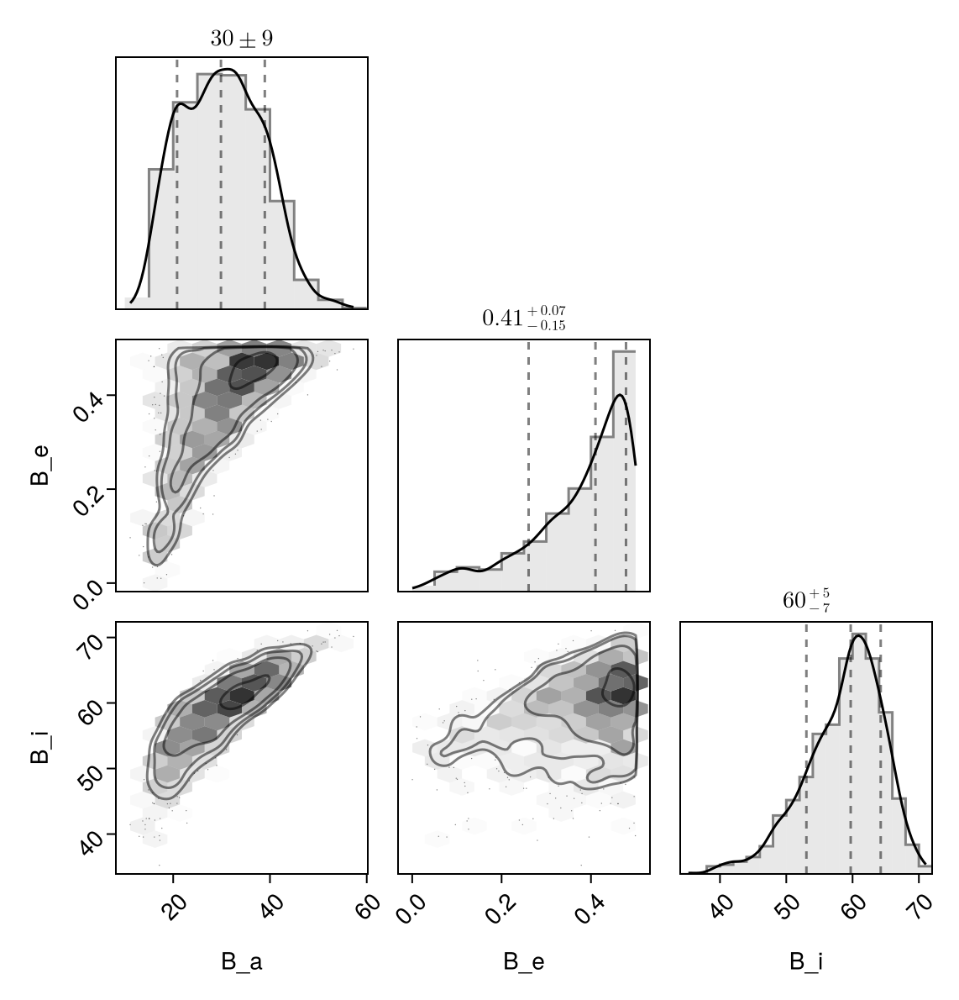

Fit with a Thiele-Innes Basis
This example shows how to fit relative astrometry using a Thiele-Innes orbital basis instead of the traditional Campbell basis used in other tutorials. The Thiele-Innes basis is more suitable then Campbell for fitting low-eccentricity orbits, because it does not have the issues where ω, Ω, and tp become degenerate as eccentricity and/or inclination fall to zero.
At the end, we will convert our results back into the Campbell basis to compare.
using Octofitter
using CairoMakie
using PairPlots
using Distributions
astrom_like = PlanetRelAstromLikelihood(
(epoch = 50000, ra = -505.7637580573554, dec = -66.92982418533026, σ_ra = 10, σ_dec = 10, cor=0),
(epoch = 50120, ra = -502.570356287689, dec = -37.47217527025044, σ_ra = 10, σ_dec = 10, cor=0),
(epoch = 50240, ra = -498.2089148883798, dec = -7.927548139010479, σ_ra = 10, σ_dec = 10, cor=0),
(epoch = 50360, ra = -492.67768482682357, dec = 21.63557115669823, σ_ra = 10, σ_dec = 10, cor=0),
(epoch = 50480, ra = -485.9770335870402, dec = 51.147204404903704, σ_ra = 10, σ_dec = 10, cor=0),
(epoch = 50600, ra = -478.1095526888573, dec = 80.53589069730698, σ_ra = 10, σ_dec = 10, cor=0),
(epoch = 50720, ra = -469.0801731788123, dec = 109.72870493064629, σ_ra = 10, σ_dec = 10, cor=0),
(epoch = 50840, ra = -458.89628893460525, dec = 138.65128697876773, σ_ra = 10, σ_dec = 10, cor=0),
)
@planet b ThieleInnesOrbit begin
e ~ Uniform(0.0, 0.5)
A ~ Normal(0, 10000) # milliarcseconds
B ~ Normal(0, 10000) # milliarcseconds
F ~ Normal(0, 10000) # milliarcseconds
G ~ Normal(0, 10000) # milliarcseconds
θ ~ UniformCircular()
tp = θ_at_epoch_to_tperi(system,b,50000.0) # reference epoch for θ. Choose an MJD date near your data.
end astrom_like
@system TutoriaPrime begin
M ~ truncated(Normal(1.2, 0.1), lower=0)
plx ~ truncated(Normal(50.0, 0.02), lower=0)
end b
model = Octofitter.LogDensityModel(TutoriaPrime)LogDensityModel for System TutoriaPrime of dimension 9 with fields .ℓπcallback and .∇ℓπcallback
We now sample from the model as usual:
using Random
Random.seed!(0)
results = octofit(model)Chains MCMC chain (1000×24×1 Array{Float64, 3}):
Iterations = 1:1:1000
Number of chains = 1
Samples per chain = 1000
Wall duration = 4.98 seconds
Compute duration = 4.98 seconds
parameters = M, plx, b_e, b_A, b_B, b_F, b_G, b_θy, b_θx, b_θ, b_tp
internals = n_steps, is_accept, acceptance_rate, hamiltonian_energy, hamiltonian_energy_error, max_hamiltonian_energy_error, tree_depth, numerical_error, step_size, nom_step_size, is_adapt, loglike, logpost, tree_depth, numerical_error
Summary Statistics
parameters mean std mcse ess_bulk ess_tail ⋯
Symbol Float64 Float64 Float64 Float64 Float64 Fl ⋯
M 1.2173 0.0994 0.0037 702.0611 679.6304 0 ⋯
plx 49.9995 0.0191 0.0006 1158.7463 412.8052 1 ⋯
b_e 0.3746 0.1135 0.0054 417.6888 450.0753 0 ⋯
b_A 218.3199 675.1746 50.7865 177.8116 247.6301 0 ⋯
b_B -659.2804 242.3823 16.9923 223.6841 272.2043 0 ⋯
b_F 1233.2549 519.8742 37.1384 197.7269 321.2468 1 ⋯
b_G 345.0161 320.6094 25.0967 176.5368 197.2444 1 ⋯
b_θy -0.1271 0.0184 0.0008 525.6708 443.6773 1 ⋯
b_θx -0.9948 0.1019 0.0046 504.3938 502.4931 0 ⋯
b_θ -1.6978 0.0131 0.0006 443.0177 488.9577 1 ⋯
b_tp 13363.7556 32097.1460 1789.1029 426.1320 678.0961 1 ⋯
2 columns omitted
Quantiles
parameters 2.5% 25.0% 50.0% 75.0% 97.5 ⋯
Symbol Float64 Float64 Float64 Float64 Float6 ⋯
M 1.0303 1.1510 1.2194 1.2789 1.424 ⋯
plx 49.9624 49.9874 49.9998 50.0119 50.037 ⋯
b_e 0.0868 0.3155 0.4101 0.4624 0.496 ⋯
b_A -956.5377 -340.8784 246.8928 789.4882 1342.789 ⋯
b_B -1060.0126 -843.8347 -680.6631 -509.4620 -136.047 ⋯
b_F 229.0800 844.8359 1268.0811 1605.4572 2140.676 ⋯
b_G -370.4226 134.7052 403.5594 599.4358 794.736 ⋯
b_θy -0.1654 -0.1394 -0.1263 -0.1142 -0.093 ⋯
b_θx -1.1950 -1.0618 -0.9861 -0.9222 -0.816 ⋯
b_θ -1.7251 -1.7065 -1.6979 -1.6894 -1.672 ⋯
b_tp -45396.9116 -12493.7005 14773.1537 48409.7230 49813.698 ⋯
1 column omitted
Notice that the fit was very very fast! The Thiele-Innes orbital paramterization is easier to explore than the default Campbell in many cases.
We now display the results:
octoplot(model,results)
octocorner(model, results, small=false)
Conversion back to Campbell Elements
To convert our chain into the more familiar Campbell parameterization, we have to do a few steps. We start by turning the chain table into a an array of orbit objects, and then convert their type:
orbits_ti = Octofitter.construct_elements(results, :b, :) # colon means all rows1000-element Vector{ThieleInnesOrbit{Float64}}:
ThieleInnesOrbit{Float64}(0.3984988420749636, -29249.40113442576, 1.1734613130974938, 50.02808364680398, 751.0732603983362, -569.6859039361503, 1726.4404768989484, 725.4577868310345, -33.971588985441336, 10.389960559889575, 81641.17927721287, 0.02810999857871835, 1.524799783748576)
ThieleInnesOrbit{Float64}(0.44235171641817295, -26443.560679270347, 1.1363063871429713, 50.027239483308705, 30.094802406238287, -883.5264638608343, 1779.3871415142983, 443.73601360808937, -32.38755553686066, -4.176093899387059, 76788.77409462315, 0.029886314249780922, 1.608256824421959)
ThieleInnesOrbit{Float64}(0.3783369222882355, 11269.142900929357, 1.340421028599614, 50.01236109496724, 956.3915569419337, -427.10126381529517, 863.7357608880645, 596.7336818248504, -15.145177098054537, 15.078636644799758, 41453.381795345806, 0.05536179037882522, 1.489018720528415)
ThieleInnesOrbit{Float64}(0.4506236655705256, -7089.709438097925, 1.2996983740011803, 49.97958110635433, 936.588696869781, -648.9340292276602, 1324.7133163285857, 555.2699581180466, -23.180953844312217, 15.203816854280038, 59397.23262982529, 0.0386370430378432, 1.624958992125561)
ThieleInnesOrbit{Float64}(0.4151257875596715, -2788.180667891924, 1.1782684483233496, 50.00304878651014, 1084.913852936854, -350.65302425808073, 1014.2295649537338, 734.3580239083058, -19.872410104856275, 16.963097312406614, 55974.192737727426, 0.04099984870171294, 1.555486641870733)
ThieleInnesOrbit{Float64}(0.36123010983298287, -14519.177102059308, 1.1956109995050215, 49.98195615852023, 533.991723064753, -598.1817727857425, 1555.5277329143157, 614.9576503226275, -30.011191434332805, 6.172586300276214, 66312.81887832604, 0.034607689316573896, 1.4598006584713052)
ThieleInnesOrbit{Float64}(0.4358855288611511, 48641.1611910995, 1.2936797800934656, 50.014496626349384, -699.1681607347238, -975.6678447438063, 1337.7929994653434, 35.305720073523005, -21.539554310986166, -17.99901354426743, 58807.97220634415, 0.03902418919317487, 1.5954246174091216)
ThieleInnesOrbit{Float64}(0.346589018599633, 49202.607382148504, 1.283512895740887, 50.00932402574184, -340.7322602557033, -825.5550573548456, 1811.550364406617, 288.7638261485808, -33.61802894304686, -10.176980406334234, 75722.34321397828, 0.03030721628571712, 1.4355698204231977)
ThieleInnesOrbit{Float64}(0.39157188938012083, -3887.504286375588, 1.2491910109493067, 49.99833704010763, -21.403238762736713, -829.5694998351776, 1472.457584564034, 259.02315894233607, -25.179288467566334, -3.9144785916729483, 54122.285499790676, 0.04240274430864934, 1.5123356436801432)
ThieleInnesOrbit{Float64}(0.18058846668638856, 18985.68964648304, 1.259553173000861, 50.00300569114667, 502.2005986751996, -413.3598866497101, 924.6145367488405, 493.42486804556887, -17.48086763433647, 5.957338726578715, 33102.877378188474, 0.06932730974496731, 1.2003232874286096)
⋮
ThieleInnesOrbit{Float64}(0.45524600409596216, 48047.78563583582, 1.2143866426898444, 49.994002113801486, -891.573771814414, -1037.1149529003585, 1247.1243316564526, -5.936348290197127, -19.591530208010003, -22.581431678398815, 64694.263696326016, 0.03547352272559635, 1.6344362858437467)
ThieleInnesOrbit{Float64}(0.30846165644155094, 49169.12712708345, 1.2713582004764041, 50.008309863947616, -357.00080857396597, -815.5647142678123, 1302.0117945824745, 274.34218358410465, -23.091259833580406, -11.923719284167257, 51001.38231342738, 0.04499747515359296, 1.3755372875121936)
ThieleInnesOrbit{Float64}(0.48971016598886336, 48820.7083106622, 1.2821807021998761, 50.0213858652786, -694.6157195764364, -1071.8175671268366, 1784.8113572552004, 137.66385503573562, -30.85042196602668, -17.97217002913079, 81746.09634440135, 0.028073920787344362, 1.7086079884056105)
ThieleInnesOrbit{Float64}(0.4099652083071302, -24793.61334281157, 1.1664042803494052, 49.99002319052869, 6.7081686793137685, -841.1860401780441, 1775.2774222126002, 407.5813176534957, -32.572746758609384, -4.065668350195222, 75077.57906181015, 0.030567493812739523, 1.545843014489065)
ThieleInnesOrbit{Float64}(0.2978131048676086, -1135.1410903177166, 1.1983505962889605, 49.98978457337736, 666.7264977865176, -504.6297900018305, 1287.0474758943083, 538.7695605027031, -24.334561637149196, 9.64010137449703, 53539.85317209731, 0.04286402179831463, 1.359501582959644)
ThieleInnesOrbit{Float64}(0.4699186954185765, -12132.043792789824, 1.2010550170137435, 49.99488439933269, 1049.672660714247, -628.6016849861815, 1304.5239944793937, 611.6381908471099, -22.945501677655045, 17.17195715104592, 64758.54351245057, 0.035438311440808064, 1.6652345504902741)
ThieleInnesOrbit{Float64}(0.4644384939282698, -45404.70119818523, 1.3189808028985075, 50.00254543356676, 1194.8008264094567, -612.1689804151623, 1932.967105550518, 682.8122886380751, -37.094077017790944, 20.394863766885393, 98548.40563229613, 0.02328737252239474, 1.6536016271808094)
ThieleInnesOrbit{Float64}(0.3601547068170416, -28286.133599003326, 1.424739010153651, 49.990533134039396, 1165.5816631521516, -470.37058036973053, 1703.020034492828, 611.8603447048916, -33.13881600145318, 20.49380027093218, 82097.82239436574, 0.027953645620749645, 1.457997114890042)
ThieleInnesOrbit{Float64}(0.38356610432957866, -16453.20974788678, 1.4103089604739192, 49.98581543928387, 951.101011928311, -571.1839806966259, 1575.4548825178442, 543.4479417082213, -29.610957346248306, 16.057330430187832, 69238.11144719564, 0.033145523259940045, 1.4981548388368258)Here is one of those entries:
display(orbits_ti[1])We can now make a table of results (and visualize them in a corner plot) by querying properties of these objects:
table = (;
B_a = semimajoraxis.(orbits_ti),
B_e = eccentricity.(orbits_ti),
B_i = rad2deg.(inclination.(orbits_ti)),
)
pairplot(table)
We can also convert the orbit objects into Campbell parameters:
orbits_campbell = Visual{KepOrbit}.(orbits_ti)
orbits_campbell[1]KepOrbit{Float64}
─────────────────────────
a [au ] = 38.8
e = 0.39849884
i [° ] = 66.1
ω [° ] = 287.0
Ω [° ] = 15.7
tp [day] = -29200.0
M [M⊙ ] = 1.17
period [yrs ] : 223.5
mean motion [°/yr] : 1.61
──────────────────────────
plx [mas] = 50.0
distance [pc ] : 20.0
──────────────────────────